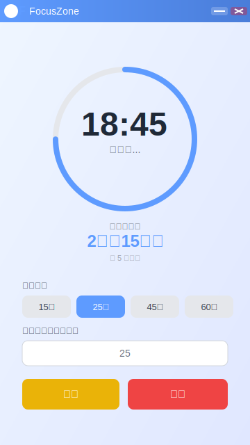

🎯 FocusZone - 专注时间管理应用

主要功能特性
🕐 番茄计时器
支持 15/25/45/60 分钟预设和自定义时长
📊 今日统计
自动记录和统计每日专注时长
💾 本地存储
使用 SQLite 持久化专注记录
🎨 优雅界面
Tailwind CSS 美化，圆角设计风格
📱 系统托盘
最小化到托盘，随时查看状态
🔔 桌面通知
完成专注时自动提醒
技术栈
Electron 27
- 跨平台桌面应用框架
React 18
- 前端 UI 框架
TypeScript 5
- 类型安全的 JavaScript
Tailwind CSS 3
- 实用优先的 CSS 框架
Vite 5
- 快速的前端构建工具
sql.js
- 纯 JavaScript SQLite 数据库（零原生依赖）